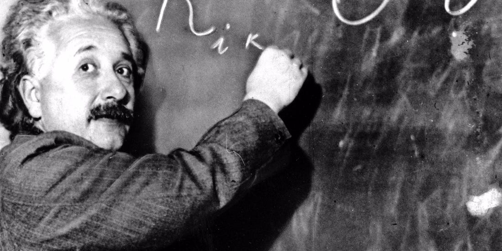

Albert Einstein
The Physicist who turned the Universe upside down

Albert Einstein writing an equation on the chalkboard
Here's a timeline of Dr. Einstein's life
1879
Born in Württemberg, German Empire
1884
Sees a compass. Becomes fascinated with physics.
1894
15 years old. Writes his first scientific paper.
1895
Fails the college entrance exam. Excels in math. Sent to the town of Aarau to finish high school.
1896
Gets into college. Never shows up to class. Teachers hate him.
1900
Graduates with a degree in mathematics and physics.
1901
First scientific work published. Works as a private tutor.
1902
Gets a job at the Swiss Patent Office. Advertises in newspapers to give private lessons. Still poor.
1905
Comes bang. Einstein's miraculous year. Annus Mirabilis -- a name given only to a few years in history. Einstein single-handedly added one to the list.
March
Quantum theory of light, the idea that light exists as photons.
May
Proved the existence of atoms (still an issue at the time).
June
Special theory of relativity. Light both as waves and particle.
November
E=mc2. The scientific basis of nuclear energy.
1906
Finally a doctorate at the University of Zurich.
1908
Doctorate at the University of Bern. Holds his first lecture.
1909
Appointed Associate Professor at the University of Zurich. First honorary doctorate from the University of Geneva.
1911
Professor at the German University of Prague. Predicts the delfection of light in a gravitational field.
1913
Max Planck and Walther Nernst travel to Zurich to win him over for Berlin. Full professorship at the University of Berlin. Director of Kaiser Wilhelm Institude of Physics.
1914
World War I begins. Becomes politically active. Signs the Manifesto of the Europeans to protest the War.
1916
Publishes General Theory of Relativity. Becomes head of German Physical Society.
1919
Obervations during a solar eclipse prove the deflection of light he had predicted. Becomes super famous overnight. Spends the following years traveling and collecting awards.
1920
Rise of anti-semitic comments against the theory of relativity.
1921
Helps to found the Hebrew University in Jerusalem.
1922
Novel Prize in Physics for discovering the Photoelectric Effect.
1925
Protests against compulsory military service together with Gandhi.
1926
Contributes to quantum mechanics by arguing against it.
1932
Publishes Why war? with Sigmund Freud.
1933
Emigrates to the USA after Hitler comes to power in Germany.
1939
WWII begins. Urges President Roosevelt to begin nuclear research.
1940
Becomes a U.S. citizen. Keeps his Swiss citizenship.
1941
Not allowed to take part in the Manhattan Project. Investigated by the FBI.
1946
Head of the Emergency Committee of Atomic Scientist. Promotes peaceful use of atomic energy.
1947
Most of his activities revolve around armament control and world government.
1952
Offered presidency of the State of Israel.
1955
Co-signs Russell Einstein Manifesto warning of the nuclear threat. Dies in Princeton Hospital at the age of 76.
“Anyone who has never made a mistake has never tried anything new.”
“When you are courting a nice girl an hour seems like a second. When you sit on a red-hot cinder a second seems like an hour. That's relativity.”
“The most beautiful experience we can have is the mysterious. It is the fundamental emotion that stands at the cradle of true art and true science.”
“I am enough of an artist to draw freely upon my imagination. Imagination is more important than knowledge. Knowledge is limited. Imagination encircles the world.”